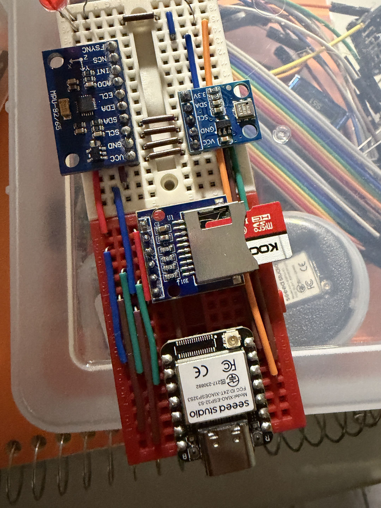
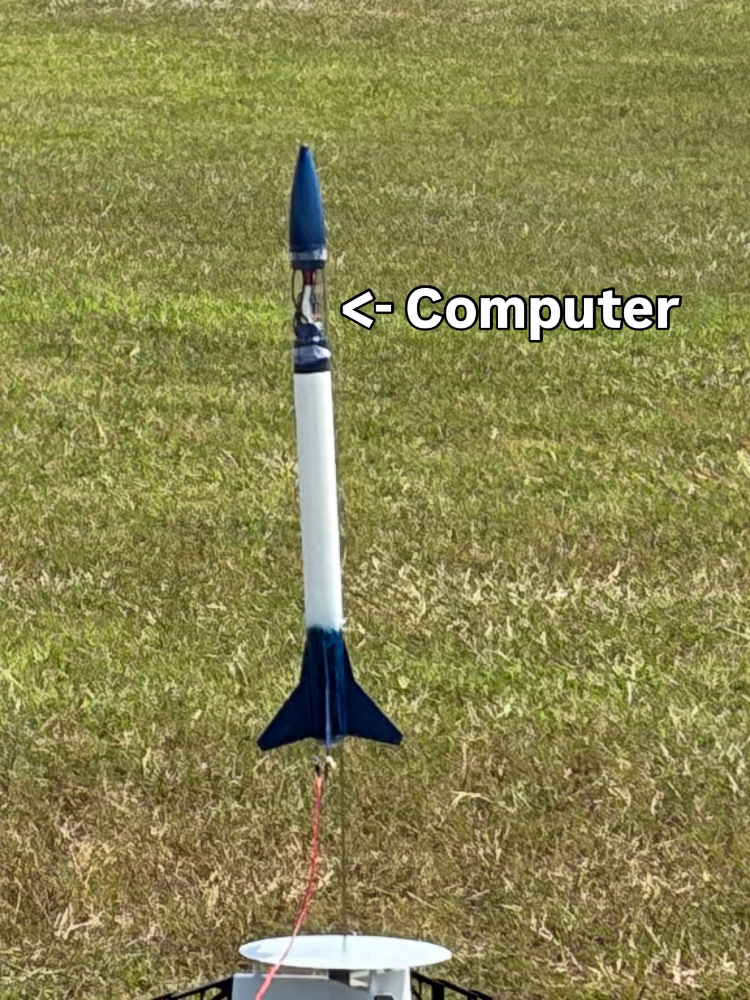

A 2D mystery Rpg where you race against time, to find your mother after her mysterious disapperance
Microcontroller Rocket Computer.
Desgined to record general preassure and acceleration to record height.


Assembly Interpreter and Assembly Executor.
Designed to be easy to write and easy to swap.
More Info here: click me
GotoMore Info here: click me
A collection of various different modules bundled together for Love2d Games
Winter Mods for Hearts of Iron IV
I plan on actually working on gameplay eventually and not just music
GotoMy attempts for the advent of code.
More info here: click me
My attempts trying to decompile Fate/EXTELLA LINK
This project is a bit on and off right now because its way too time consuming for my current schedule.
I hope to at least get something working some day.
GotoImplementation of the Linked Data Base.
It works somewhat as the backend for record keeping.
Server and Client in C
GotoRefined Version of Minesweeper.
Shoddy Linked Data Base implementation.
Reimplementations of the C standard Library
How to make a game project folder. (Minesweeper)
GotoBirthday Tic-Tac-Toe Discord Bot
Dungeons and Dragons Discord Bot
One of the first games I ever released.
Mainly due to technical issues, most of the game was unrecoverable for quite some time.
Even after recovering the files 2 years later, so much has happened since then that I don't feel like working on it.
A return one day might be possible.
A self described "programing lanugage"
It's really just a glorified Lua wrapper.
Though it is the first thing I ever published.
Goto